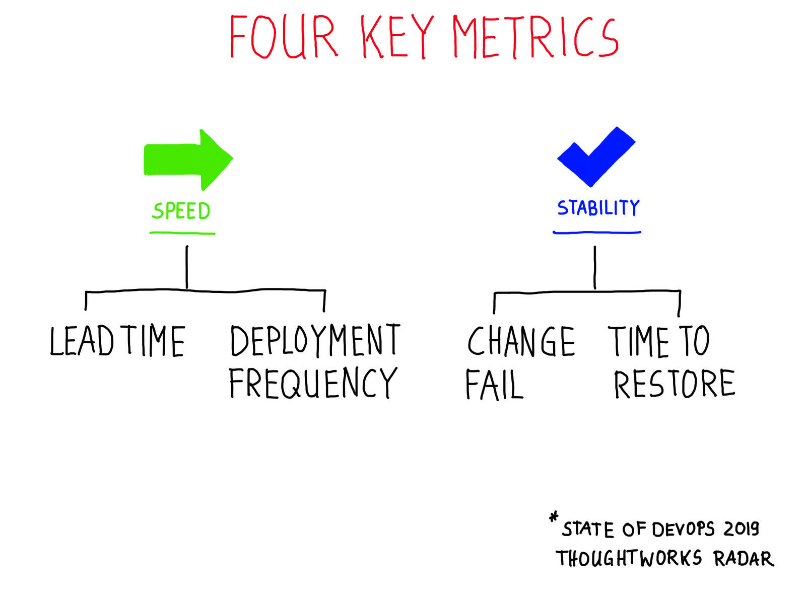

Technical Agility
I was giving a talk at an internal event of a consulting firm on Technical Agility. Here are my experiences and ideas on that topic.
I will touch on
- What
- Why
- Where
- How ( & How to measure)
I will only touch on technical aspects of this topic. There is so much more to it like organization, team structure, culture and trust.
The ability to react to changes is the reason I want to have Technical Agility. Pretty generic. But this is what the term says. Everybody can react to changes it is just a matter of time. So let’s assume that you want to ‘React to changes fast’. How to define fast is up to you and of course, very use case-specific.
Why do I want to react to changes? You might want to incorporate feedback from your customers quickly to make sure you are not building the wrong thing. This applies to all sorts of companies where you launch a new product (or want to). So early-stage startups are usual in that position.
A former boss of mine said:
In this product everything is regulated by the government, we do not need to change fast. We exactly know when which new law is coming and we will implement it in time.
This is correct … but how about bug fixing? I guess nobody is against fixing bugs as fast as possible. How about improving the user experience for the people who have to work with it?
So where could one be ’technical agile’? I see the following areas touch by it:
- Architecture
- Development
- Testing
- Deployment
- Operations
- Security
Yes, everything within the life cycle of a product can be affected. It does not have to but in all these areas it is possible to speed up the delivery of features. Architecture needs to allow those kinds of possibilities, development can use techniques to faster and easier to deliver the right things and so on.
So how do we do it? First will be the question how can I measure it? There is some fantastic research on technical factors of success in the State of DevOps Report 2019.

They are talking about four key metrics which they saw are important to support the success of the product from the technology side.
Lead time for changes For the primary application or service you work on, what is your lead time for changes (i.e., how long does it take to go from code committed to code successfully running in production)?
Deployment frequency For the primary application or service you work on, how often does your organization deploy code to production or release it to end users?
Change failure rate For the primary application or service you work on, what percentage of changes to production or released to users result in degraded service (e.g., lead to service impairment or service outage) and subsequently require remediation (e.g., require a hotfix, rollback, fix forward, patch)?
Time to restore service For the primary application or service you work on, how long does it generally take to restore service when a service incident or a defect that impacts users occurs (e.g., unplanned outage or service impairment)?
They group all the participants in 4 categories: Low, Medium, High, Elite. It turns out that the Elite performers (compared to the low performer) deploy 208 times faster and have 106 times faster lead time. This results in 2604 times faster recovery and 7 times lower change failure rate.
{kind=link}
I know many people who will not believe this. A couple of years ago I helped to move a product from a 3-month delivery cycle to deploy daily multiple times a day. All in all the awaited chaos did not happen and the stability slightly even improved. So from my personal experience, I can support that argument.
So how to be faster? I will always try to
Small incremental changes - Small change will keep your risk low. You just changed one small thing. Usually, it should not have that much big of an effect but even it does, you know what you have changed and you can fix it or roll it back. - Less Risk.
Early Feedback - To know if things are working you need to know all the problems as soon as possible. Some people call this was well ‘Shift Left’. If I know that the interface with the other system changes since my tests say this, I will not deploy it to production. If I know this library has a security problem, I will not deploy it to production. - Fewer Bugs_.
Automate many, many things - Work which needs to be done over and over again (like deployments) need to be automated. It is ok when a human has to push a button to do that but if I computer can do it by itself then automate it. This takes the human error out of those boring, tedious tasks. - Reliability.
Ok, what can be done. There are so many things like (and more):
- Smaller Deployments
- No branches Development
- Automated Testing
- End to End Testing
- DevOps
- Automated Documentation
- Infrastructure as Code
- Automate all the Things
- Security Audit
- Monitoring for all
- Production Access for Developers
- Operations in Teams
- Contract Testing
- Web Testing
- Code Analysis
- Pair Programming
- BDD/TDD
Let’s look at a typical way of a feature to production, code will be committed, tested and build, stored in a repository, deployed on testing and production. Where in this chain can you accelerate the process? Below are some ways which work or might work not so well from my experience.
Architecture. Before we start with that I want to talk about architecture. You need to have a system where it is easy to change parts of it in an isolated manner. This can be a microservice architecture but also a well-structured monolith. There is nothing bad about a monolith. A distributed microservice architecture where everything depends on each other does not help at all. So you need to have an architecture where you incrementally can change and replace parts of it. Without that, it is really hard. Unless you are in a business where downtime deployments are ok (e.g. you only need to be available during working hours) you should start thinking about how to achieve that. Just don’t start to slice your product because you think you need some other structure. Start with what is useful for your business. That could be an implementation of a new feature. Over time all these smaller changes will lead to a more robust and more agile product. This might take years.
Deployment automation. Automation is very essential to reduce the risk of production deployments. Without it, developers might get feedback on tests very late in the process. In my experience it a couple of things are important:
- Everything should be stored in version control. This does not only include the application code but as well as tests, deployments scripts, and infrastructure setup.
- Make sure all the environments you are testing on are very similar to production. This might not be always possible in terms of sizing or availability of external services. But make sure you use the same tools and setups for test environments and production. I have seen software developed on MacOS, tested on Debian and deployed on Redhat in different shape and sizes. Of course, the packaging and deployment method differed. One poor guy had to write the same deployment scripts for different environments. This is just waste and you will see the real problems in production first.
- Automate your database changes. To deploy code changes automatically you need to apply all changes to the database as well. There are plenty of tools out there which help you do that.
- Build your deployment artifacts once and deploy those in all environments. If you rebuild artifacts in the process you might see different results in different environments.
- Minimize manual steps to zero. Manual steps are error-prone and humans make mistakes. This can as well touch on organizational and process guidelines in a company.
I’m not talking about that everything which is checked in has to go to production immediately. Some companies do that but it is not necessary in all cases. I’m talking about that when somebody decides that this code is ready for production it can go to production. This is a decision made by a person (or a group) which then triggers the whole process. It’s also ok, that before things hit the live servers somebody says this is ok. Just to make sure that you don’t have to do more than hitting a button.
Pair Programming. I’m a fan of pair programming. Two people are coding together. You get more insight and much earlier feedback. If one person codes by himself and after a couple of hours (or 2 days) he checks in the code (or better does a code review), he might get the feedback the he is the only person understanding the code and that along the way the person reviewing or later maintaining the code has a different view on the problem/solution. Pair programming ensures that feedback is given at there very moment the code is written and a discussion starts for the best solution. What are the problems? The people pairing need to have the same mindset and need to have the feeling that they can exchange their ideas freely. It does not help if the junior programmer sits next to the senior and just not questions a single thing. This is not pairing. If they are both engaged pairing also helps to spread knowledge and improves the team capabilities. I do not think that I could enforce (real) pair programming. There needs to be a trust relationship in that team otherwise it can not work. Managers sometimes say this doubles the costs of the code. Since programming is not just typing but creative work, I disagree.
Test/Behavior Driven Development (TDD/BDD). Those techniques help you to think (maybe together with a stakeholder) what should be achieved. It defines the results and behavior in tests. TDD is more oriented towards ’technically’ execution: you write a test first and then write the code to fulfill this expectation. BDD, on the other hand, let’s you think about the scenarios and features first. So the question which is answered here is more what could be an acceptance criteria. These things can be discussed with a stakeholder. Both approaches help me to think about the expected result before I start coding. This is a good thing. It helps me building the right thing. Is it broadly used? No, not in my experience. Everybody in the teams needs to understand the benefits. This is not always clear. For a programmer it is more fun to start programming right away. It is often seen as waste since things might not be that clear (and we figured it out during programming anyway). So why writing tests first if I do not know if these are the right tests.
Master Based Development. Long-lived branches in the version control system enable teams to develop features independent of what is currently in production. They can do bigger refactorings without affecting other people. The problems start once you merge the trunk back in the branch (and vice versa). If other developers also doing longer lived branches they need a lot of coordination effort to resolve all conflicts. Regular merge downs are required hoping that nobody touches the code which got changed in your branch. ‘Code locks’ or ‘Code freezes’ are a typical sign you spent a lot of time just managing merge conflicts. The problem gets bigger if you need to test your branch changes in your separate build chain and environment. You need to take care of these as well. The alternative is you just don’t have a build chain and execute all tests locally. If code is developed on the master branch you do not have different code bases which you need to merge. If you run your Continous Integration build chain everything is tested and ready to go. This has the disadvantage that potential new features are also going to production and you have to make sure that you do not have a ‘half-ready’ feature committed. Most of the time you can prevent it with feature switches. Now instead of merge conflicts, you need to manage feature switches and you have to make sure to remove them after the feature should be live. Often it is not a problem if a feature goes live earlier. I would opt to go for master based development since I avoid merging hell and I get my build chain and testing for free.
Continuous Integration. Enough said. Everything which is committed must go though the build chain and everything must be automated. At least what is feasible to prevent human error. This is a must, somewhat meta and almost everybody is doing it to some extent.
Static Code Analysis. I believe static code analysis helps a great deal. Every developer should take advantage of it. Tools like Sonarqube help every developer to spot critical bugs during development. The acceptance seems to be ok. Not everybody likes it since the distance to go to a webpage to check which problems are found is too big. To solve this either it can be integrated into the IDE or the build can break if a threshold was met. The main problem is the set of rules which define these thresholds. If the developers do to agree that these rules are a good set, they will be very reluctant to obey them. I have seen cases where some Enterprise Architect in a different department, in a different city developed these rules. This way everybody will find a way around it or a way to have to deal with that as little as possible. Communication is important and explaining why this is a very good set of rules. If these rules are applied and then you see 10.000 violations in the code base everybody will be demotivated and not will be eager to fix them. My recommendation would be to start with a small set of rules, fix these and expand it over time. You can much more easily explain the rationale behind it if needed and 15 violations are a goal one could reach.
Tests. To get feedback on the code you should run tests as soon as possible. There are different types of tests:
- Unit
- Integration
- Contract Tests
Unit tests are written in varying quality and some percentage of coverage will be achieved. People are saying that 100% coverage is required. Giving out numbers will lead people to fulfill these number if they make sense or not. Every (true) team should find its baseline for it. Integration tests are used to check if the system works with the components it directly talks to. Developers use mocks or the real system (if the setup is not too much of a problem) to execute these tests. Having mocks behave like the original system can have some challenges. The original team which develops the other service can provide such as mock to all its clients instead of every team developing its own (partial) mock. I did not have seen it that a team develops a service and a mock for that service for other teams. Contract testing ensures that a pair of applications will work correctly together by checking each application in isolation to ensure the messages it sends or receives conform to a shared understanding that is documented in a “contract”. This is around for only very few years and I saw a lot of people talking about it but very little had a lot of experience with it. It sounds very good since all the contracts are working you have just confirmed the system as whole works as expected.
E2E Tests. End to End Tests. The holy grail of tests for many years. After developing and testing the application for weeks and some point somebody had to do E2E Tests. If you are not trusting you development process before and the tests which have been done you might up ending with hundreds of tests which will need to be executed before each deployment. So it slows you down. Another scenario is that in a one year project some E2E use cases are created and one person (or a small team) will be dedicated to create these tests and do them manually because it is too expensive to automate them. Why it is too expensive? Because the developers capable of writing these need to code features and not tests. If your E2E tests are decoupled from the development you might have a problem. When features change, E2E Tests need to change. This will happen some late in the process and a) will go through because everybody says, its ok that the tests fail we fix it later or b) will stop there and the E2E Team has to understand what is wrong and write and they have to ask the stakeholders (or hopefully) read documentation on it. In my opinion, there should be only minimal E2E tests. You have to make sure things are tested before. Big E2E tests are always a hurdle and of course, something will fail (since features changed) and will slow you down. If this is not the case you will have big upfront meetings and discussions which also slows you down. The answer might be an organizational one. Organize teams, features, and responsibilities in the same manner. You will end up with smaller E2E test cases which one team can control and change.
DevOps. You want your developers to take care of the software. From writing the code until it will be decommissioned. Only they can fix the pain a potential operations colleague will have. It should be their software. If you want to move fast there is no way around it. Nobody but the developers will be able to deliver code to production in the desired rate. Whatever number of people working in operations, they will not be enough to deploy all the artifacts to production. It just will not scale. In my experience, it was a necessity because the colleagues could not keep up with the deployment requests.
Monitoring. To get feedback about the application developers need to see (alongside with operations) how it is behaving the production. Only they know what might be problems and can fix that proactively. They access to all the information about desired metrics to understand bugs.
Infrastructure as Code. How you build your systems should be code. What is required for the applications should be valid as well for the infrastructure. If you can’t rebuild your systems with a push of a button you can not recover your system in a timely, reproducible way. In the age of cloud providers, this is more and more the norm. Nobody should use a UI to create a system. Tools like AWS Cloudformation or Terraform should be used to take manual steps out of the recovery. This is even possible in a more traditional data center. Deploying artifacts to production needs to be automated with tools like Puppet, Chef or Ansible. Every change to production like tweaking parameter for a JVM should be code and needs to be reproducible and testable on development stages. This works really well but depending on the size of your system it will take a very long time. This is an investment you need to justify. You get back reliability and on top, you can create testing and development environments from the same code with less effort.
This is it. Thanks for reading. There are a ton of other things. I might do another post about it.
I can recommend the book ‘Accelerate: The Science of Lean Software and Devops: Building and Scaling High Performing Technology Organizations’.